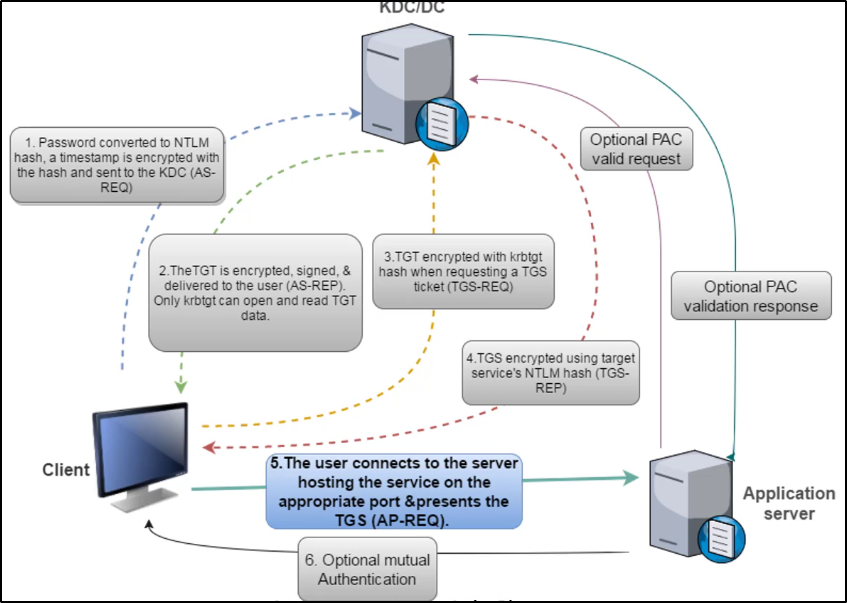
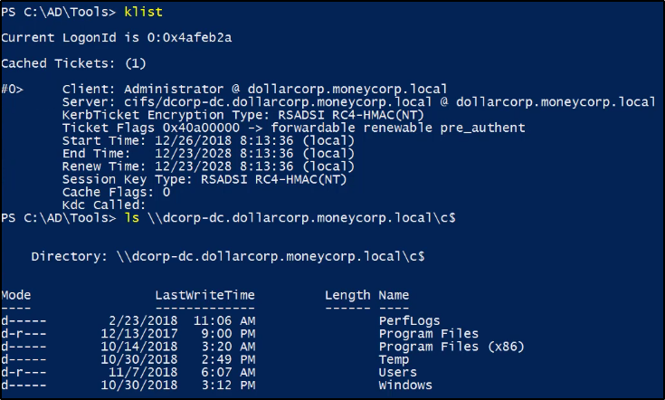

Silver Ticket
Per Silver Ticket si intende:
metti caso che riusciamo ad ottenere la password o l'hash NTLM del Service Account dell'Application Server.
Con questo hash possiamo creare ticket TGS a nome di qualsiasi utente.
Silver Ticket è un TGS valido,
un TGS cifrato e firmato dall'hash NTLM del Service Account.
(per comparazioni, i Golden Ticket sono signed dall'account krgtgt)
I servizi raramente checkano i PAC (Privileged Attribute Certificate),
e i servizi danno accesso solo ai servizi stessi runnati sul Service Account
dal quale sfruttiamo l'hash NTLM.
Un Silver Ticket da una persistenza di circa 30 giorni per account PC.

Utilizzando l'hash dell'account del DC,
questo comando mostra gli shares del PC (service:CIFS)
Quali servizi sono utili?
HOST, RPCSS, WSMAN e tanti altri!
Lista completa: https://adsecurity.org/?page_id=183

Curiosità:
Non esiste una sintassi per il Silver Ticket,
si utilizza sempre la stessa del golden + service


Ecco un esempio, per il servizio CIFS:


Eccone un altro, per il servizio HOST.
Questo ci permette di schedulare un task sulla macchina target.

Con questi 2 comandi, si crea un task e lo si esegue:


Ecco un esempio:

Ora sulla macchina possiamo vedere i task schedulati:

Possiamo settare un web server per permettere al comando di scheduling task di ottenere il file .ps1:

Possiamo modificare lo script affinche sia chiamato appena eseguito:

Creiamo sulla nostra macchina un netcat che ascolta sulla porta scelta,
in modo da ascoltare appena viene eseguito il task:

Nel caso non funzioni il ticket, ricrealo:

Schedula il task:

Infine, avvia il task:

Adesso dovrebbe essere connesso al nc powecat:
premi invio un paio di volte per vedere se ha funzionato.

17:06